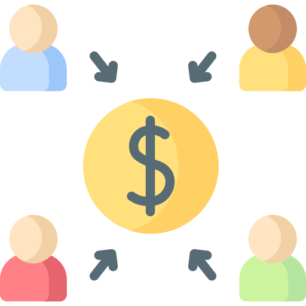
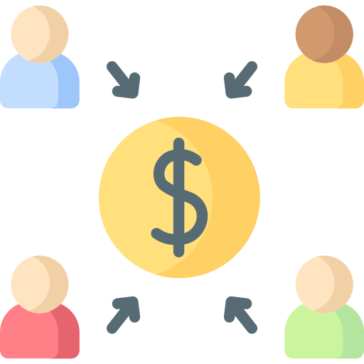
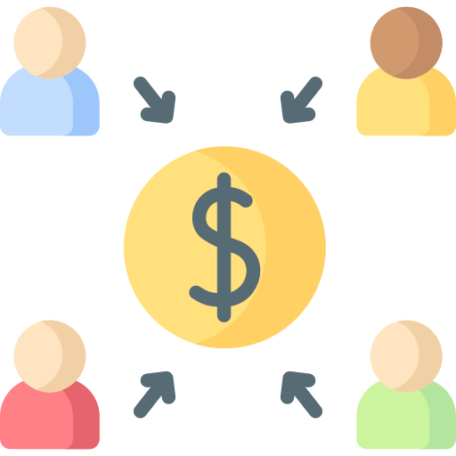
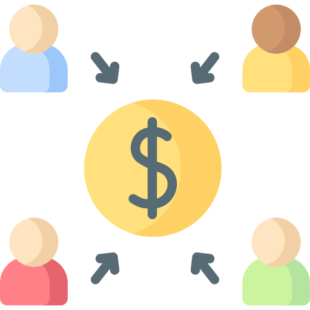

Crowdfunding
 



Crowdfunding is the use of small amounts of capital from a large number of individuals to finance a new business venture. Crowdfunding makes use of the easy accessibility of vast networks of people through social media and crowdfunding websites to bring investors and entrepreneurs together, with the potential to increase entrepreneurship by expanding the pool of investors beyond the traditional circle of owners, relatives and venture capitalists.
who proposes the idea or project to be funded.

who support the idea.

that brings the parties together
to launch the idea.
1. Donation-Based Crowdfunding
is a
donation type fundraising society. Initiator will post their project on the online donation
platform and donator will not receive the benefits.
2. Reward-based Crowdfunding
Like a
Donation-based crowdfunding but donator will receive some rewards in return but not the money.
3. Debt-Based Crowdfunding
Is a type
of platform that allows participants to borrow and lend sums of money. it's also known as crowdlending
or social lending.
4. Equity-based Crowdfunding
Is the
process whereby people invest in an early-stage unlisted company in exchange for shares in that
company.
If you need to raise money on short notice, crowdfunding is an efficient option. Because of its easy-to-use process, building and sharing a campaign doesn’t require a ton of time.
Investors are always searching for opportunities with big benefits and low risks. As such, investors find this option a good choice, considering it is an independent sector that is not linked to other financial markets. It remains stable even during times of economic instability.
crowdfunding has the potential to foster innovation by offering new sources of capital to innovation‐driven firms and thereby reduce the funding gap for innovative startups. And, crowdfunding offers a way for the crowd to participate in the innovation process by providing feedback to the entrepreneur.


Crowdfunding platforms are a lever that allow the social and solidarity economy to develop and attain their objectives in an area where traditional finance would have slowed them down. It is also a way of obtaining a guarantee of confidence on the viability of a project and its public interest, a way of raising awareness with decision-makers and investors.